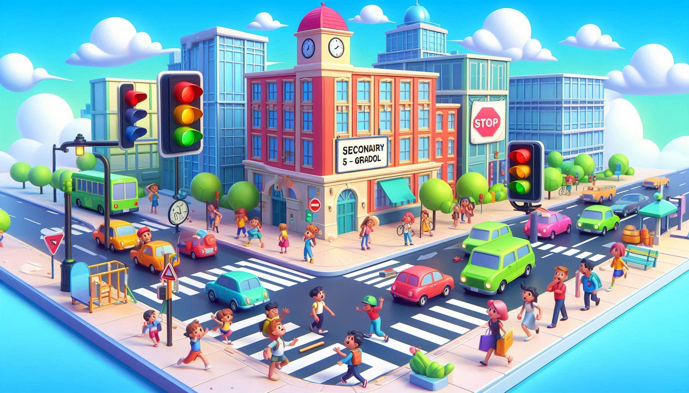
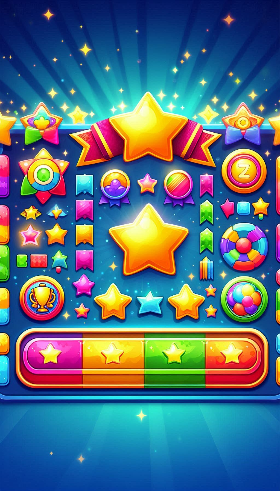
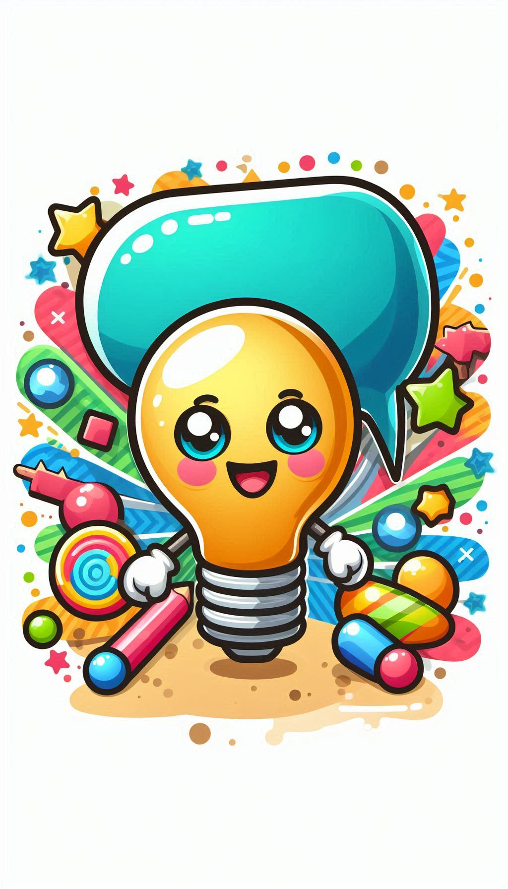
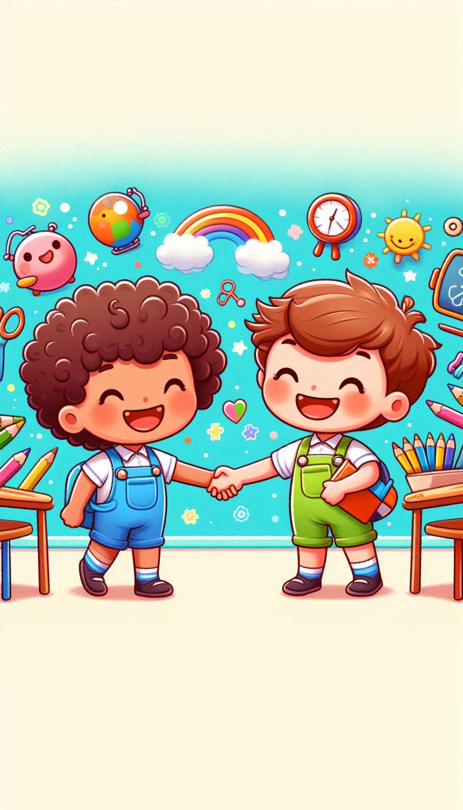

Masadaki Arduino, LED, direnç ve butonları kullanarak trafik ışığı devresini kur.

Puan Tablosu

İpucu Al

Arkadaşına Sor
Kurduğun devreye uygun mBlock kodunu yaz. Kodda trafik ışığı sırayla çalışmalı:
Puan Tablosu
İpucu Al
Arkadaşına Sor